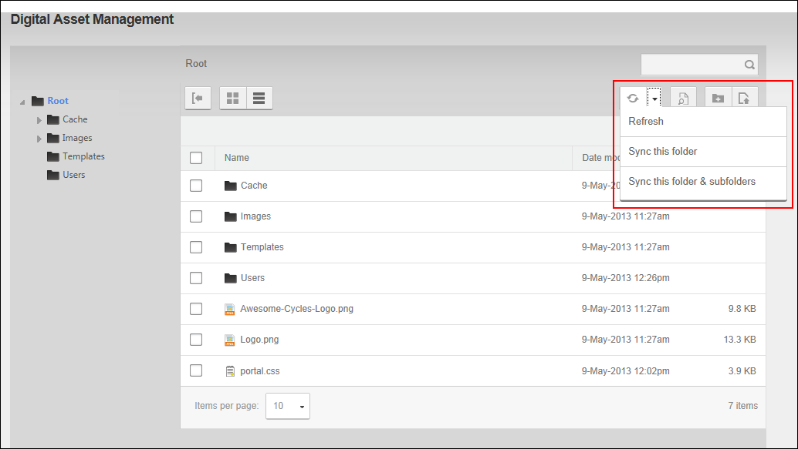

Synchronizing Folders
How to synchronize one or more folders of the Digital Asset Management Pro module to ensure the folders listed match the folder structure within the database. This may be required when folders are uploaded using FTP directly to the database. Restricted to Administrators.
- Navigate to Admin >
 File Management - OR - Go to a Digital Asset Management Pro module.
File Management - OR - Go to a Digital Asset Management Pro module.
- Click the Sync
 button on the toolbar and then select one of these options from the drop down list:
button on the toolbar and then select one of these options from the drop down list:- Refresh: Select to refresh the files within a selected folder of the Digital Asset Management module so the file information in the database matches the files on the server. This may be required if files have been uploaded via FTP
- Sync this folder: Select to synchronize the folder structure and files of the selected folder only.
- Sync this folder & subfolders: Select to synchronize the folder structure and files of the selected folder and all subfolders.
Tip: Click on the Sync button again to close the drop down menu.
